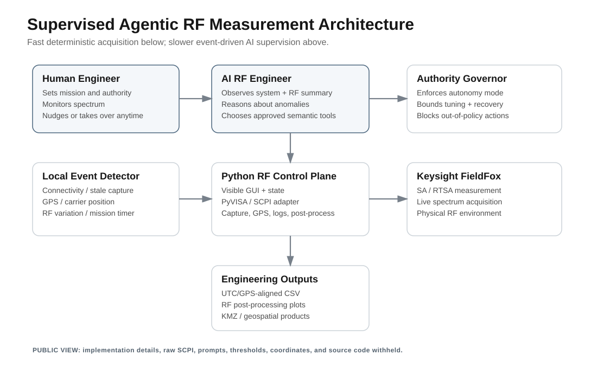
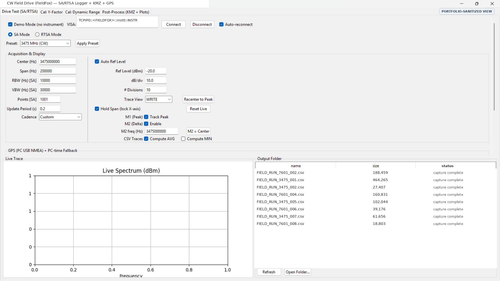
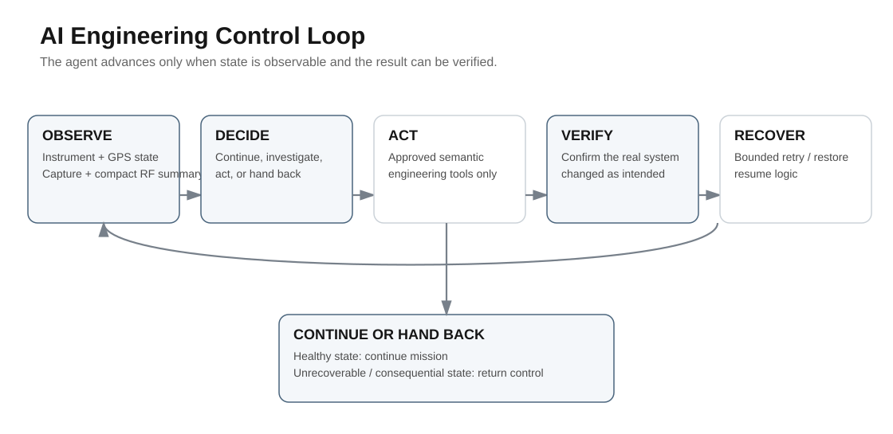
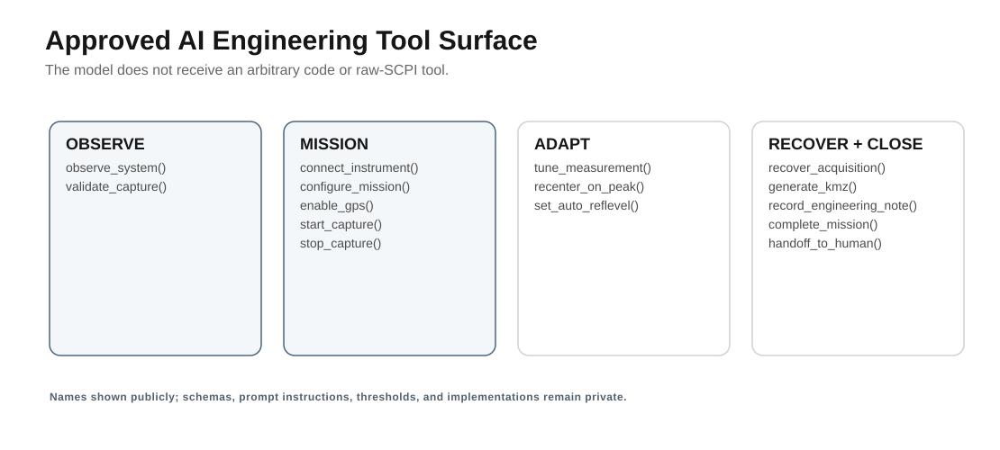
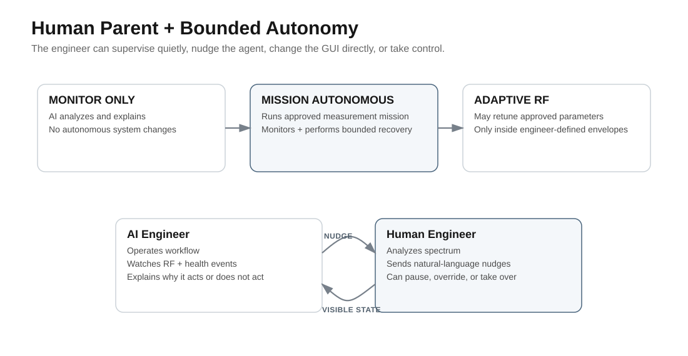
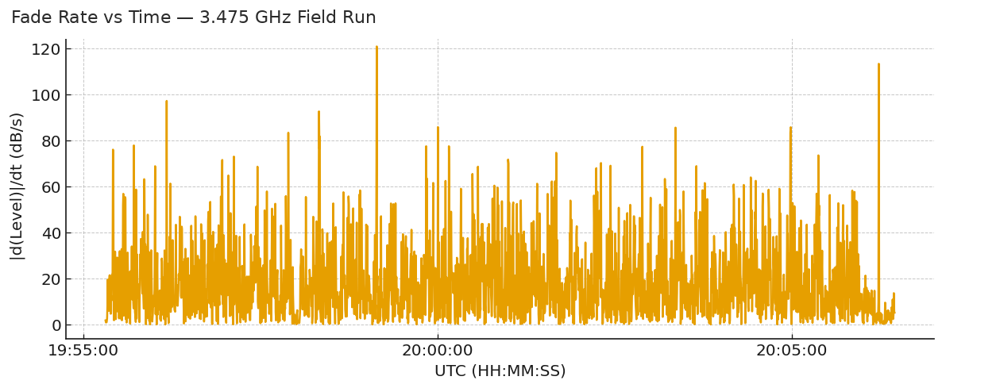
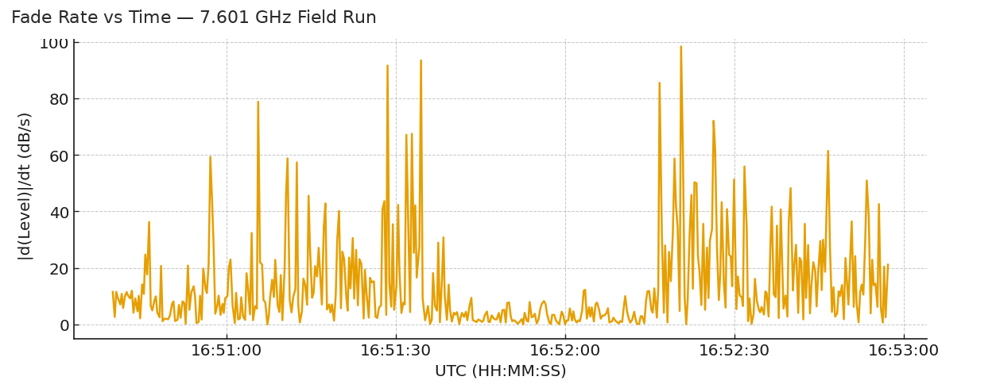
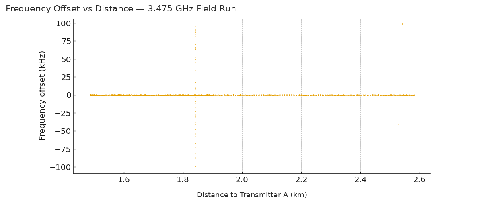
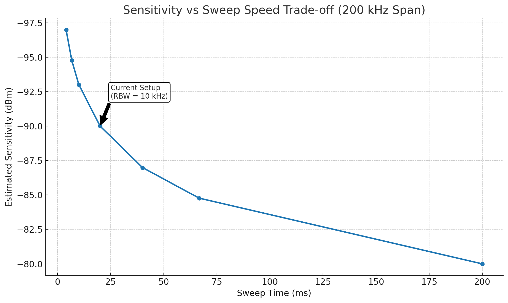

Giving an AI engineer supervised control of a real RF measurement workflow
I first built the Python GUI and instrument-control layer around a Keysight FieldFox for repeatable CW field collection. Once that was stable, I extended the workflow with an AI engineering supervisor that could run an approved collection, watch the instrument and data, recover routine problems, explain what it was seeing, and keep the engineer in control.
The GUI and RF plots below are sanitized from real engineering work. Architecture graphics and the agent trace are public abstractions. Production code, prompts, exact thresholds, raw test data, coordinates, and customer details are intentionally omitted.
A field measurement is a live system, not a script that runs once.
The collection depended on instrument state, center frequency, span, RBW/VBW, sweep timing, GPS quality, capture health, RF behavior, file integrity, and post-processing. A useful agent had to know what it could observe, what it was allowed to change, what counted as a healthy run, and when the right engineering decision was to leave the measurement alone.
I kept the fast acquisition loop deterministic and put the AI above it as a slower supervisor. That separation mattered. The model could reason about the mission and the RF state, while ordinary software still owned the timing-sensitive instrument control.
The agent worked through engineering actions, not unrestricted instrument commands.
The model could choose from a small set of meaningful actions such as observe, connect, configure a mission, start or stop a capture, recover acquisition, tune an approved measurement, validate the data, generate a KMZ, or hand control back. A deterministic authority layer checked whether the action was allowed before anything touched the instrument.

If the model makes a bad suggestion, the governor can reject it. If the model is unavailable, the deterministic acquisition and watchdog logic still have a known state. The LLM is the engineering supervisor, not the timing loop and not the safety interlock.
The human never had to wonder whether the agent had taken over the instrument.
The application exposed the measurement configuration, SA/RTSA mode, presets, sweep cadence, reference level, markers, GPS state, live spectrum, calibration workflows, output files, and post-processing. That made the agent's actions observable in the same place the engineer already worked.

The field collection still belonged to the engineer. The AI could work inside the approved mission, but the person could pause it, change the GUI directly, issue a natural-language nudge, or take control at any time.
I wanted the agent to behave more like a junior engineer than a macro recorder.


Autonomy was a setting, not an all-or-nothing decision.

The agent can inspect and explain. It cannot change the system.
The agent can run the approved collection, monitor health, recover routine failures, validate the output, and finish the mission.
The agent may change approved RF parameters inside engineer-defined limits and with configuration provenance preserved.
The engineer can say things like “hold this configuration and watch the fading” or “widen the span if the carrier stays near the edge.”
I also treated a manual GUI change as parent authority. If the engineer changes the span or center frequency directly, the agent should notice the new state and work from it, not immediately change the instrument back to what the AI wanted.
Recovery preserved the last verified measurement state.
If communications failed after an approved measurement change, reconnecting to the original preset would be wrong. The recovery path instead preserved the current verified configuration, reconnected, reapplied it, verified it, and resumed in a new data segment so the change remained traceable.
REPRESENTATIVE / SYNTHETIC AGENT DECISION TRACE This is a portfolio illustration, not an actual field or customer log. 14:00:03 OBSERVE preflight_snapshot 14:00:04 ACT connect_instrument 14:00:05 VERIFY instrument_connected 14:00:13 ACT start_capture 14:03:42 EVENT rapid_level_variation 14:03:43 DECIDE no_retune — carrier and acquisition remained stable 14:05:10 HUMAN nudge — hold configuration; focus on fading behavior 14:07:31 EVENT capture_stale 14:07:32 RECOVER reconnect, restore verified state, resume new segment 14:07:35 VERIFY capture_resumed 14:14:02 VERIFY capture accepted 14:14:05 VERIFY post-processing complete 14:14:06 COMPLETE control returned to engineer
A text version of this representative trace is included with the public assets. Real field logs and exact recovery thresholds are not published.
The workflow continued past collection into RF analysis.
GPS- and UTC-aligned measurements fed higher-level engineering products such as fade behavior, carrier-frequency stability versus distance, sensitivity-versus-speed trade studies, and geospatial KMZ-compatible outputs. The agent could supervise that pipeline, but the RF interpretation remained visible to the engineer.




I wanted to show the engineering, not hand out the implementation.
The agent became more useful when it knew when not to act.
Keeping the measurement loop deterministic made the system easier to reason about. Giving the agent compact RF summaries instead of every raw sample made the reasoning layer more focused. Keeping the GUI visible meant the engineer could analyze the spectrum instead of babysitting routine acquisition state.
What I would add next
- Local event triggers that wake the reasoning layer only when something meaningful changes.
- Automatic bookmarking of RF events with pre- and post-event trace windows.
- Rules for persistent carrier drift or repeated span-edge behavior before allowing an adaptive change.
- Run-to-run comparisons that tell the engineer when the propagation environment is materially different from an earlier route.
- More bench validation of adaptive decisions before allowing broader autonomous tuning on physical hardware.
Giving an AI authority over a physical engineering workflow is mostly a state-and-control problem. The model matters, but so do bounded tools, visible state, verification, recovery, configuration provenance, and a clean handoff back to the person responsible for the measurement.